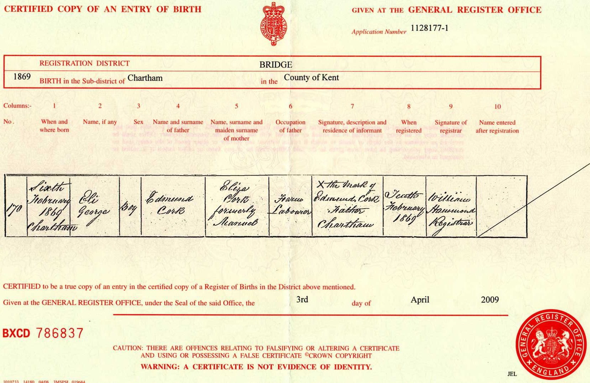

Eli George Cork 1869 - c1933
[ Home ] | [ Calendar ] | [ Surnames Index ] | [ Census Index ] | [ Family History ]A laborer on a farm, Eli Cork, the husband of Jane Boodle (the first cousin three-times-removed on the mother's side of Nigel Horne), was born in Chartham, Kent, England on Feb 6, 18691,2,3 and married Jane (with whom he had 8 children: Jane, Fanny, Alfred, Frank, Sidney, Lily, Horace and Leonard, along with 3 surviving children) in Bridge, Kent, England in 1890.
During his life, he was living at Plough Row, Harbledown, Kent on Apr 5, 18915, on Mar 31, 19011 and on Apr 2, 19114.
He died c. Feb 1933 in Canterbury, Kent, England3.
Children
- Jane was born in 1889
- Fanny was born in 1892
- Alfred was born in 1894
- Frank was born in 1898
- Sidney was born c. Nov 1899
Citations
- 1901 England, Wales & Scotland Census - Findmypast (was age 32 and the head of the household)
- England & Wales births 1837-2006 - Findmypast
- England & Wales deaths 1837-2007 - Findmypast
- 1911 Census for England & Wales - Findmypast (was age 42 and the head of the household)
- 1891 England, Wales & Scotland Census - Findmypast (was age 23 and the head of the household)
Media
Eli Cork Birth Certificate

1891 England, Wales & Scotland Census - GBC/1891/0005722678
England & Wales births 1837-2006 - BMD/B/1869/1/AZ/000134/048
England & Wales deaths 1837-2007 - BMD/D/1933/1/AZ/000250/014
England Births & Baptisms 1538-1975 - R_885422374
Family Tree

Generated by ged2site. Last updated on Jun 11, 2024